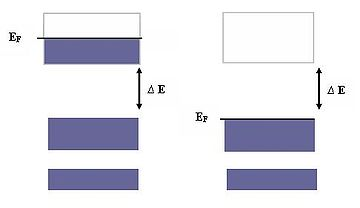
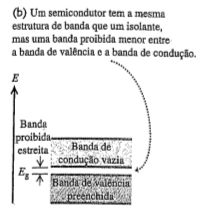
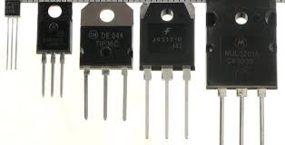
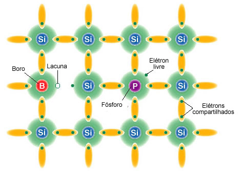

|
O que são bandas de energia?
Dentro de um sólido as energias possíveis dos elétrons estão agrupadas em bandas permitidas separadas por bandas proibidas devido à periodicidade do potencial criado por íons em sólidos. A Figura 1 mostra a representação das bandas de energia em um sólido.
As bandas de energia mais profundas completamente ocupadas por elétrons são chamadas de bandas de valência, essas são inertes do ponto de vista elétrico e térmico. Correspondem aos níveis atômicos de energia mais baixa apenas levemente afetados pela presença de outros átomos no cristal. A banda parcialmente preenchida é chamada de banda de condução.
|

|
Figura1: Representação esquemática dos níveis individuais de energia ocupados por elétrons no zero absoluto, onde EF é o mais alto nível ocupado.
|
O que são semicondutores?
A condutividade é um fenômeno próprio da eletricidade e consiste na capacidade de um material em permitir a passagem da corrente elétrica. Este fenômeno atinge especialmente os metais. Os metais têm propriedades similares (todos são maleáveis, dúcteis e podem mudar de forma, assim como todos apresentam certo brilho). Além destas características podemos acrescentar outra a mais: a condutividade.
A condutividade elétrica está presente em vários campos: na indústria, na química, no petróleo, nos dispositivos elétricos, entre outras áreas e aplicações. A condutividade elétrica de um metal ou material depende de sua estrutura molecular e atômica. A maioria dos metais são bons condutores, uma vez que em sua estrutura interna existem muitos elétrons que estão vinculados fragilmente, possibilitando que se movam com maior facilidade. A condutividade é, portanto, a proporção entre o campo elétrico de um metal e a necessidade de corrente em um condutor.
|
Muito utilizado em equipamentos eletrônicos, os semicondutores são sólidos capazes de mudar sua condição de isolante para condutores com grande facilidade. Isso se deve ao fato de que os semicondutores possuem uma banda proibida intermediária.
A banda proibida é a região localizada entre as bandas de valência, ou camada de valência do átomo, e a banda de condução (região onde, sob ação de um campo elétrico, se forma a corrente elétrica).
Como o isolante, um material semicondutor no zero absoluto tem uma banda de condução vazia acima da banda de valência totalmente preenchida. A diferença é que, em um semicondutor, a banda proibida entre essas bandas é relativamente pequena, e os elétrons podem saltar com mais facilidade para a banda de condução.
|

|
|

|
Um semicondutor possui uma resistividade elétrica intermediária entre a de um bom condutor e a de um bom isolante. A extraordnária importância dos semicondutores na eletrônica moderna decorre do fato de que suas propriedade elétricas são muito sensíveis a pequenas variações de impurezas.
A condutividade dos semicondutores pode ser alterada variando-se a temperatura, o que faz com que atinjam uma condutividade semelhante a dos metais e são provenientes de excitações térmicas é denominada condutividade intrínseca. Os semicondutores podem ser de silício ou germânio, utilizados para a fabricação de componentes eletrônicos, como, por exemplo, os transistores.
|
O que é Dopagem?
A Dopagem eletrônica consiste num procedimento de adição de impurezas químicas a um elemento semicondutor para transformá-lo num elemento mais condutor, porém, de forma controlada. Três elementos comuns na dopagem eletrônica são o carbono, o silício e o germânio. Todos possuem quatro elétrons na camada de valência, o que possibilita que formem cristais já que compartilham seus elétrons com os átomos vizinhos, formando estruturas reticuladas ou cristalinas.
A maioria dos semicondutores é composta por silício, porém, o germânio também pode ser utilizado por possuir propriedades em comum. O silício possui quatro elétrons em sua camada de valência e estabelece quatro ligações com os átomos vizinhos, criando uma rede cristalina. Como todos os elétrons estabelecem ligações covalentes, eles não podem se mover, sendo assim, não podem conduzir corrente elétrica, portanto, quando puro, o silício possui condutividade próxima de zero. Essa condição pode ser alterada de duas formas:
- Variando a temperatura: em baixas temperaturas, o silício apresenta as camadas da banda de valência preenchidas por elétrons. Conforme se eleva a temperatura, os elétrons da última camada “libertam-se” de sua ligação, tornando-se elétrons livres que podem conduzir corrente elétrica.
- Pelo processo de dopagem: consiste na adição de uma substância diferente do silício, que pode ser denominada impureza. Com esse processo, é possível controlar a concentração de portadores de carga e assim modificar as propriedades elétricas do material.
|
|
Tipos de Dopagem
Tipo N: São adicionados ao silício átomos de fósforo ou arsênio. Esses elementos possuem cinco elétrons na sua camada de valência, porém, ao serem acrescentados à rede cristalina do silício, não é possível que todos esses elétrons estabeleçam ligações. Fica, portanto, um elétron livre, que se caracteriza por possuir carga negativa, por isso a denominação N. Pouca quantidade dessas impurezas já possibilita a existência de elétrons livres suficientes para estabelecer corrente elétrica.
Tipo P: as substâncias adicionadas podem ser o bório ou o gálio. Esses elementos possuem apenas três elementos na última camada, que, quando se ligam ao átomo de silício, deixam um “buraco”, ou seja, a falta de um elétron, o que possibilita a passagem da corrente elétrica. Essa ausência tem a propriedade de carga positiva, por isso o nome P.
|

|
|